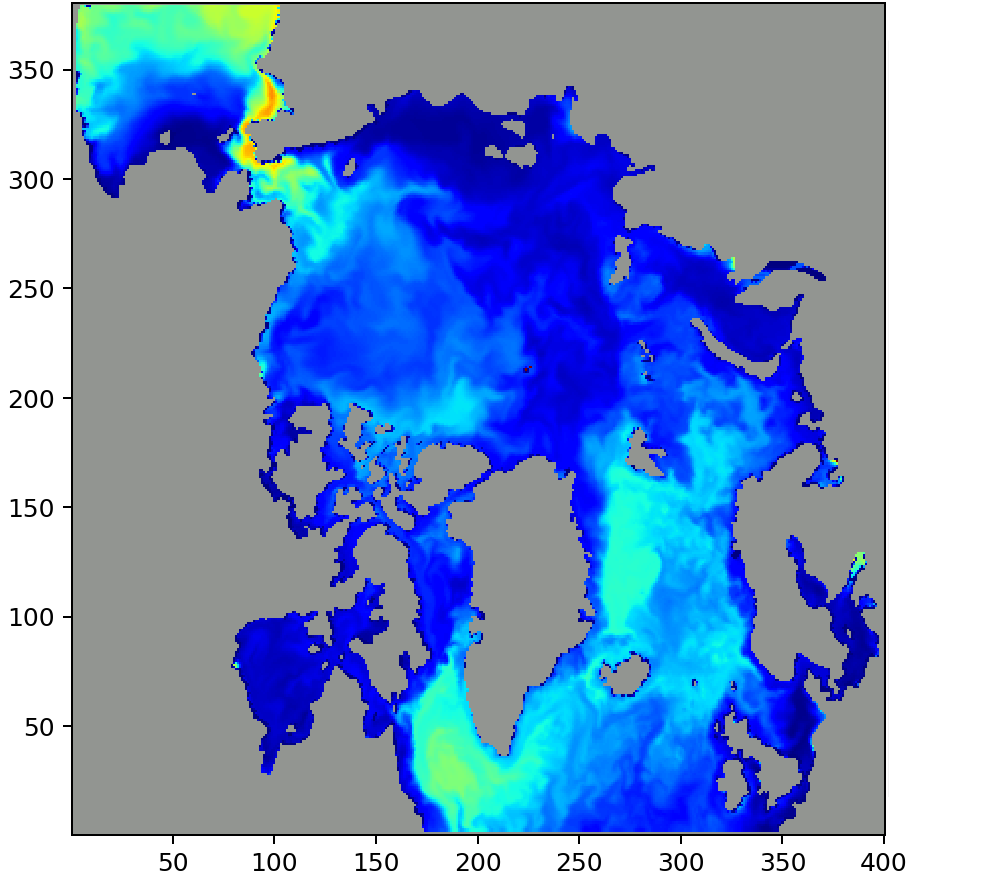

Several static input files must be generated or copied before the model can run. This step assumes MSCPROGS and hycom_ALL have been compiled successfully.
Generate climatologies and forcing
This step is handled by create_ref_case.sh — a grab-bag script that generates
relaxation climatologies, river and kpar forcing, and MPI tile definition files.
Copy the script to your experiment directory:
cd $WORK/<CONFIGNAME>/expt_<EXPT_ID>
cp $HOME/NERSC-HYCOM-CICE/bin/create_ref_case.sh .
Open create_ref_case.sh and update:
Icore— number of MPI tiles in the i-direction (e.g.29for TP2 on Betzy)Jcore— number of MPI tiles in the j-direction (e.g.26for TP2 on Betzy)iceclim— set to0(no ice climatology) or1(initialize from ice climatology)
Icore and Jcore control how the domain is decomposed for MPI parallelism. Choose
them so that Icore × Jcore × (ocean fraction) is close to your available core count,
while keeping individual tiles large enough to be efficient (at least ~10 grid cells in
each direction). On Betzy, nodes have 128 cores and jobs should use a multiple of 128
cores. For TP2 (~67% ocean), Icore=29, Jcore=26 gives NMPI=504, which is close to
512 (4 nodes).
Also find the tile_grid.sh line in create_ref_case.sh and add the -s 1 flag (tile
size variation factor; 1 encourages near-uniform tiles, default 9.5 allows more
variation), so it reads:
tile_grid.sh -s 1 -${Icore} -${Jcore} ${T} > $EDIR/log/ref_tiling.out 2>&1
Then run the script:
bash create_ref_case.sh
After the script completes, check the tile definition file created in topo/partit/. The
four-digit number in the suffix is NMPI (the actual number of ocean MPI tasks, less than
Icore × Jcore because land-only tiles are excluded). Set this value in EXPT.src. For
TP2 on Betzy (Icore=29, Jcore=26, topography version 04), this is NMPI=504.
Files generated by create_ref_case.sh
Location |
Contents |
Condition |
|---|---|---|
|
Physics relaxation climatology (z-level and hybrid-level) |
always |
|
BGC relaxation climatology (z-level and hybrid-level) |
|
|
CO2 relaxation climatology |
|
|
Relaxation mask |
always |
|
Sea ice cover climatology |
|
|
River forcing |
always |
|
kpar forcing (diffuse light attenuation from SeaWiFS; only read by the model when |
always |
|
MPI tile definition files (e.g. |
always |
All paths are relative to $WORK/<CONFIGNAME>/.
Note: Most output goes to IEXPT-specific paths (
relax/<IEXPT>/,force/rivers/<IEXPT>/), so runningcreate_ref_case.shfrom different experiments does not cause conflicts. Two files are shared across all experiments in a configuration: the z-level relaxation climatology (relax/<CLIM_CHOICE>/) and kpar forcing (force/seawifs/). These would be overwritten, but with identical content since they do not depend on experiment settings. Tile files (topo/partit/) are also shared; they are named by tile count, so differentIcore/Jcoresettings produce separate files rather than overwriting, butNMPIinEXPT.srcmust match the tile file used.If all files already exist from a previous run of
create_ref_case.sh(e.g. for a different experiment in the same configuration), you can skip rerunning the script entirely. In that case, symlink or copy the IEXPT-specific files into the appropriaterelax/<IEXPT>/andforce/rivers/<IEXPT>/folders for the new experiment.
Optional: custom river forcing
The default river forcing generated by create_ref_case.sh is sufficient for most
experiments. A more complete river forcing combining AHYPE/EHYPE, TRIP, and Greenland
ice melt can be built manually using the scripts in $HOME/NERSC-HYCOM-CICE/bin/:
AHYPE/EHYPE (Arctic/European HYPE — Hydrological Predictions for the Environment): a hydrological model providing spatially distributed river discharge. Produced by
river_nersc.sh, which places discharge along the coast using arivers.datfile.TRIP (Total Runoff Integrating Pathways): routes ERA40/ERAI reanalysis runoff to river mouths using a river network database. Produced by
river_trip.sh.
All scripts must be run from the experiment directory. They write to
$WORK/<CONFIGNAME>/force/rivers/, overwriting the default files from
create_ref_case.sh.
cd $WORK/<CONFIGNAME>/expt_<EXPT_ID>
Steps:
Run
river_nersc.shto produce AHYPE/EHYPE river runoff.Run
river_trip.shto produce TRIP river runoff.Run
merge_TRIP_Hype_abfile_4Greenlnad.pyto merge all sources into a singlerivers.a/b, including Greenland ice melt.
TODO: Clarify whether
triverinblkdat.inputneeds to be set to1when using the merged river forcing that includes Greenland ice melt.
TODO: The Greenland files (
griver.a/b) are on the TP5 grid (780×800) and must be regridded to TP2 before merging. How?
Open boundary (nesting) files
Nesting is enabled when nestfq > 0 (days between 3D nesting archive input) or
bnstfq > 0 (days between barotropic nesting archive input) in blkdat.input. When enabled, the following files
must be present under $WORK/<CONFIGNAME>/nest/<IEXPT>/:
File |
Contents |
|---|---|
|
Open boundary section definitions |
|
2D relaxation coefficient field for physics |
|
2D relaxation coefficient field for BGC tracers |
For TP2, you can copy these files from the following reference experiment:
DIR_NST=/nird/datalake/NS9481K/shuang/nest/TP2_expt023
mkdir -p $WORK/<CONFIGNAME>/nest/<IEXPT>
cd $WORK/<CONFIGNAME>/nest/<IEXPT>
cp ${DIR_NST}/ports.input .
cp ${DIR_NST}/rmu.a ${DIR_NST}/rmu.b .
cp ${DIR_NST}/rmutr.a ${DIR_NST}/rmutr.b .
Open boundary sections (ports.input)
Each port in ports.input defines one open boundary segment. The file lists nports followed by five
values per port:
Field |
Description |
|---|---|
|
Orientation: |
|
First i-index of the boundary segment |
|
Last i-index ( |
|
First j-index of the boundary segment |
|
Last j-index ( |
For N/S boundaries the segment spans a range of i-indices at a fixed j; for E/W boundaries it spans a range of j-indices at a fixed i.

TP2 domain (400×380 grid). Gray areas are the land mask. The two open boundaries are the Pacific boundary (past the Bering Strait, northern edge) and the Atlantic boundary (southern edge). Technically a third open boundary exists at the western portion of the northwest corner, but it has been closed (set to land) for simplicity — visible as a small stripe of land in the figure.
Example ports.input for TP2 (two open boundary passages):
2 'nports'
1 'kdport' 5 'ifport' 102 'ilport' 380 'jfport' 380 'jlport'
2 'kdport' 174 'ifport' 348 'ilport' 2 'jfport' 2 'jlport'
Port 1 (
kdport=1, North): along the northern edge of the domain (j=380), spanning the western portion of the grid (i=5–102). This is the Pacific open boundary, past the Bering Strait.Port 2 (
kdport=2, South): along the southern edge of the domain (j=2), spanning the central portion of the grid (i=174–348). This is the Atlantic open boundary.
At these boundaries the model reads 3D temperature, salinity, and velocity fields from the
parent model and relaxes toward them according to the rmu field.
Relaxation coefficients (rmu / rmutr)
rmu and rmutr are 2D fields (μ, s⁻¹) of the size of the grid, controlling how strongly the model is nudged
toward the nesting boundary conditions at each grid point: 0 in the interior, ramping
linearly to 1/(e-folding time) at the boundary. rmu applies to physics (temperature,
salinity, velocity); rmutr applies to BGC tracers.
HYCOM uses paired .a/.b files throughout. The .b file is a plain-text header
containing variable names, grid dimensions, and min/max summaries: it describes the
contents but holds no spatial data. The .a file holds the actual binary data: the full
2D field as IEEE 754 big-endian 32-bit floats, with a value at every grid point. The two
files must always be kept together.
Example .b file for rmu and rmutr (TP2, zone width=20 cells, e-folding time=20 days;
both files are identical for TP2):
Relaxation mask
Relaxation mask created by topo_ports.py. rel zone width=20, efold time=20 days
i/jdm = 400 380
rmu: min,max = 0 5.787037e-07
Note that the internal variable name is rmu in both files. The max value
(5.787037×10⁻⁷ s⁻¹) equals 1/(20 days × 86400 s/day). The .a file contains the full
400×380 array, one float per grid point.
Generating nesting files from scratch
For TP2 the files can simply be copied from a reference experiment (see above). If you
need to generate them from scratch (e.g. to adjust the relaxation zone width or
e-folding time) use topo_ports.py. The script reads regional.grid.a/b (grid
coordinates) and regional.depth.a/b (bathymetry and land mask), detects open boundary
segments automatically from where ocean cells sit at the domain edge, and writes both
ports.input and rmu.a/b.
Note:
regional.grid.a/bandregional.depth.a/bare pre-existing configuration files in$WORK/<CONFIGNAME>/topo/. Generating them for a new grid is a separate offline step not covered here.
Create a scratch directory and link in the required files:
mkdir -p $WORK/<CONFIGNAME>/nest/<IEXPT>/SCRATCH
cd $WORK/<CONFIGNAME>/nest/<IEXPT>/SCRATCH
ln -sf $WORK/<CONFIGNAME>/topo/regional.grid.a .
ln -sf $WORK/<CONFIGNAME>/topo/regional.grid.b .
ln -sf $WORK/<CONFIGNAME>/topo/regional.depth.a .
ln -sf $WORK/<CONFIGNAME>/topo/regional.depth.b .
Run the script with the bathymetry file, zone width, and e-folding time as arguments (TP2 values: width=20 cells, e-folding=20 days):
python $HOME/NERSC-HYCOM-CICE/pythonlibs/modeltools/modeltools/_old/scripts/topo_ports.py \
regional.depth 20 20
This writes ports.input.tmp (review and rename to ports.input) and rmu.a/b. Copy
rmu to rmutr if the same parameters apply to BGC tracers:
mv ports.input.tmp ../ports.input
cp rmu.a rmu.b ../
cp rmu.a ../rmutr.a
cp rmu.b ../rmutr.b
Sponge layer diffusion files
A common use of nesting is to add a sponge layer near the open boundaries: enhanced
biharmonic diffusion that smooths the solution in the relaxation zone. This is done by
setting thkdf4 and veldf4 to negative values in blkdat.input, which tells the model
to read spatially varying 2D fields from file rather than using a uniform scalar. The
following files must then be present under $WORK/<CONFIGNAME>/relax/<IEXPT>/:
File |
Description |
|---|---|
|
2D relaxation timescale for physics |
|
2D relaxation timescale for BGC |
|
2D biharmonic diffusion coefficient for layer thickness |
|
2D biharmonic diffusion coefficient for velocity |
Note: Spatially varying
thkdf4andveldf4fields are not limited to sponge layers — any spatially varying biharmonic diffusion pattern can be prescribed this way. The sponge layer is just the most common use case in a nesting context.
These are generated by hycom_creat_thkdf4_veldf4.py. First, create a scratch directory
and link in the grid and topography files:
mkdir -p $WORK/<CONFIGNAME>/relax/<IEXPT>/SCRATCH
cd $WORK/<CONFIGNAME>/relax/<IEXPT>/SCRATCH
ln -sf $WORK/<CONFIGNAME>/topo/regional.grid.a .
ln -sf $WORK/<CONFIGNAME>/topo/regional.grid.b .
ln -sf $WORK/<CONFIGNAME>/topo/regional.depth.a .
ln -sf $WORK/<CONFIGNAME>/topo/regional.depth.b .
Copy the script locally:
cp $HOME/NERSC-HYCOM-CICE/bin/hycom_creat_thkdf4_veldf4.py .
Open the script and set the parameters for your configuration:
Parameter |
TP2 |
TP5 |
Description |
|---|---|---|---|
|
|
|
Minimum diffusion value |
|
|
|
Maximum diffusion value |
Then run the script with the sponge layer width as its argument (20 grid cells for TP2):
python hycom_creat_thkdf4_veldf4.py 20
Copy the output to the parent directory:
cp thkdf4.a thkdf4.b veldf4.a veldf4.b ../
Atmospheric forcing files
Note: This step is handled automatically by
srjob.sh. Skip it if you are usingsrjob.shto submit jobs (recommended).
Atmospheric forcing must be prepared for each run period. To prepare it manually:
cd $WORK/<CONFIGNAME>/expt_<EXPT_ID>
$HOME/NERSC-HYCOM-CICE/bin/atmo_synoptic.sh era5+lw ${DATE_START}T00:00:00 ${DATE_END}T00:00:00
This creates the following files under $WORK/<CONFIGNAME>/force/synoptic/<IEXPT>/:
airtmp.[ab], dewpt.[ab], mslprs.[ab], precip.[ab], radflx.[ab],
shwflx.[ab], vapmix.[ab], wndewd.[ab], wndnwd.[ab]
Since forcing files do not include dates in their filenames, leave a stamp in the directory to record what period they cover:
cd $WORK/<CONFIGNAME>/force/synoptic/<IEXPT>
rm -f stamp_*
touch stamp_${DATE_START}-${DATE_END}